🌾 1. Les cultures céréalières (principales)
Ce sont les plus importantes au Niger, car elles servent à l’alimentation de la population et à l’économie.
Riz de la vallée du Niger
Riz blanc produit dans les périmètres irrigués du fleuve Niger, apprécié pour le riz gras, le tchèp et les plats familiaux.
Dosso, Maradi · Coopératives paysannes
- Décorticage réalisé en rizerie locale
- Teneur en brisures contrôlée
- Contrats possibles avec restaurants
Maïs du Niger
Maïs jaune cultivé dans les zones sahéliennes du Niger, utilisé pour la bouillie, la farine et l'alimentation animale.
Tillabéri, Maradi · Coopératives agricoles
- Séchage naturel au soleil
- Possibilité de transformation en farine
- Vente en gros ou au détail
Mil local
Mil issu de cultures pluviales, séché et trié, adapté pour la boule, la pâte, les bouillies et farine locale.
Maradi, Zinder · Producteurs villageois
- Origine : exploitations familiales
- Tri manuel et ensachage en local
- Idéal pour grossistes et boutiques
🥬 2. Les cultures maraîchères (légumes & fruits)
Elles sont souvent cultivées en saison sèche grâce à l’irrigation.
Oignon de Galmi
Oignon violet de Galmi, très apprécié dans la sous-région, idéal pour les sauces, salades et la vente sur les marchés urbains.
Galmi · Zone de production reconnue
- Séché et ventilé avant ensachage
- Taille moyenne à grosse
- Forte demande sous-régionale
Tomate du Niger
Tomates fraîches cultivées dans les zones irriguées du Niger, utilisées pour les sauces, les salades et la transformation en purée.
Tillabéri, Dosso · Maraîchers locaux
- Récolte quotidienne pendant la saison sèche
- Adaptée à la transformation en purée ou jus
- Possibilité de contrat avec supermarchés
Mangue du Niger
Mangue fraîche et juteuse cultivée dans les zones fertiles du Niger, idéale pour le jus, la confiture et la consommation directe.
Dosso, Niamey · Coopératives agricoles
- Récolte en saison sèche pour une meilleure qualité
- Bon potentiel d’exportation
- Transformation possible en jus ou séchée
🌱 3. Les cultures industrielles / commerciales
Elles servent à fabriquer d’autres produits ou à être vendues à l’étranger.
Arachide du Niger
Arachide cultivée dans les terres fertiles du Niger, utilisée pour l'huile, la pâte d'arachide et la consommation directe.
Maradi, Zinder · Coopératives rurales
- Tri et nettoyage manuel
- Séchage naturel au soleil
- Disponible en sacs de 50kg ou 100kg
Haricot du Niger
Haricot local cultivé dans les zones semi-arides du Niger. Utilisé pour la sauce, le couscous et riche en protéines naturelles.
Tahoua, Zinder · Coopératives agricoles
- Sélection de graines de qualité
- Production adaptée au climat sahélien
- Idéal pour la consommation ou l’exportation
Souchet du Niger
Souchet cultivé dans les zones irriguées et semi-arides du Niger, utilisé pour la boisson “kunnu”, la farine nutritive et les snacks locaux.
Niamey, Dosso · Groupements agricoles
- Très riche en fibres et minéraux
- Transformation possible en boisson “kunnu”
- Bon rendement commercial
.jpg) 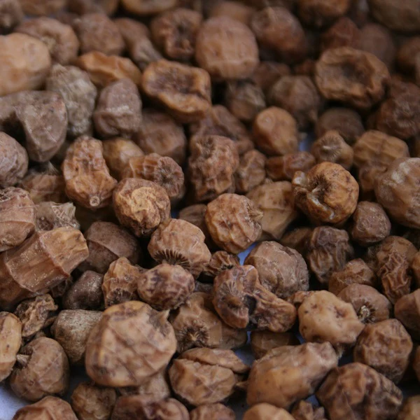
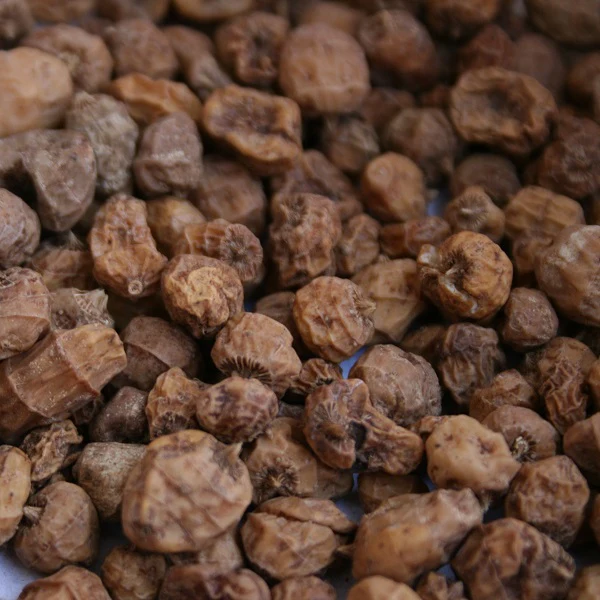
 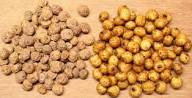
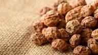
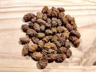
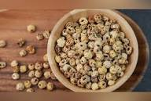
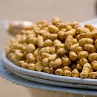
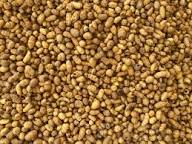
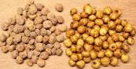
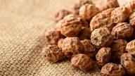
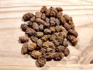
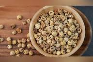
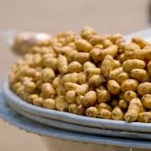
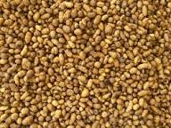